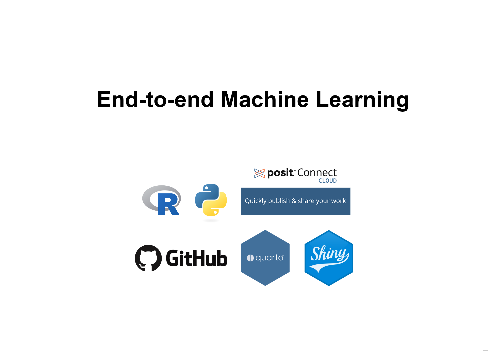
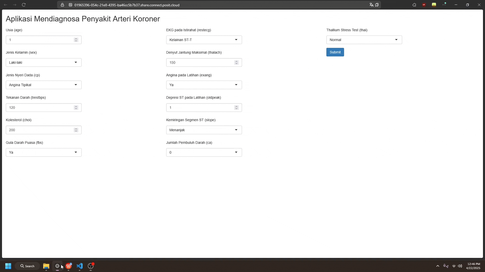
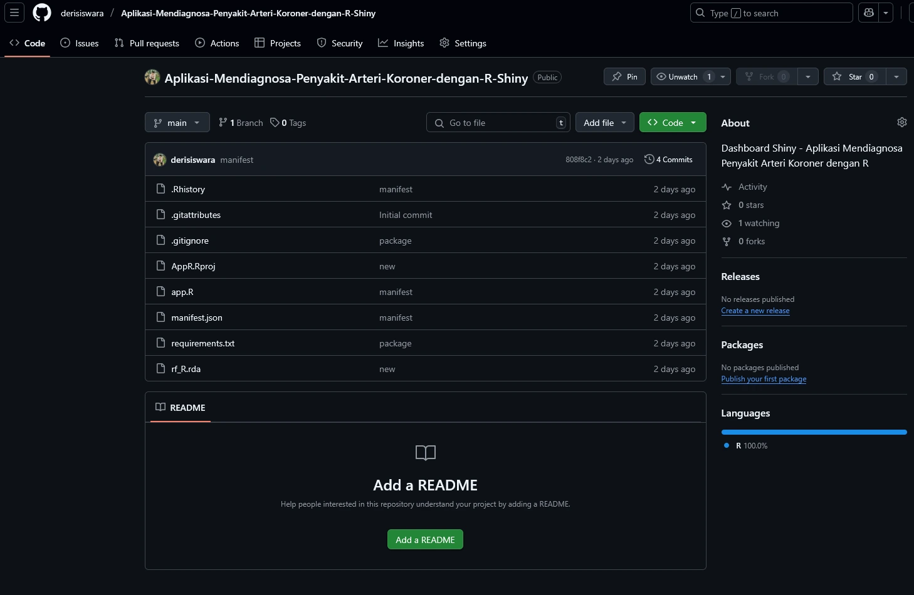
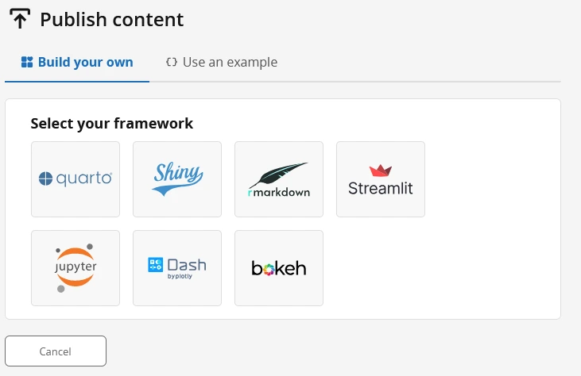
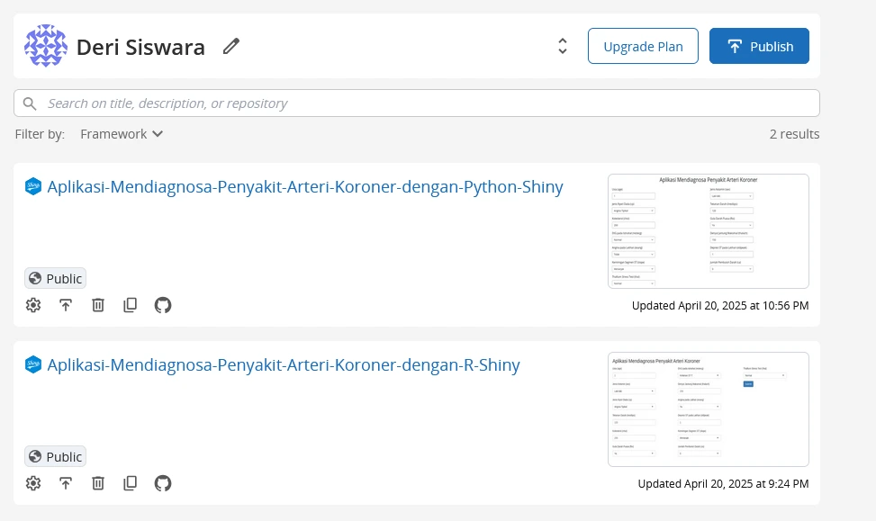

age sex cp trestbps choi fbs restecg thalach exang oldpeak slope ca thai num
1 63 1 1 145 233 1 2 150 0 2.3 3 0 6 0
2 67 1 4 160 286 0 2 108 1 1.5 2 3 3 1
3 67 1 4 120 229 0 2 129 1 2.6 2 2 7 1
4 37 1 3 130 250 0 0 187 0 3.5 3 0 3 0
5 41 0 2 130 204 0 2 172 0 1.4 1 0 3 0
6 56 1 2 120 236 0 0 178 0 0.8 1 0 3 0End To End Machine Learning (R, Python, Quarto, Shiny, GitHub, Posit Connect)
Python
R
Machine Learning
Tutorial on building a machine learning application using R, Python, Quarto, Shiny, GitHub, and Posit Connect
App R App R Code App Python App Python Code

Tutorial ini akan membahas tentang bagaimana cara membuat aplikasi machine learning sederhana dengan menggunakan kombinasi R, Python, Quarto, Shiny, GitHub, dan Posit Connect Cloud. Tutorial ini merupakan gambaran proyek end-to-end machine learning mulai dari pengolahan data, pemodelan, hingga deployment ke dalam aplikasi yang dapat diakses oleh pengguna (user). Tutorial ini sangat sederhana dengan tujuan menunjukkan proses end-to-end machine learning yang pada kenyataannya cukup kompleks. Dalam tutorial ini, proses dibuat sederhana untuk menunjukkan titik awal dan akhir. Banyak proses yang dipersingkat demi efisiensi tutorial. Sebagai catatan, tutorial ini dibuat untuk intermediate user yang sudah memahami dasar-dasar beberapa tools yang digunakan.
Secara singkat, berikut penjelasan kegunaan beberapa tools yang digunakan dalam tutorial ini:
R dan Python: Dua bahasa pemrograman yang paling banyak digunakan untuk machine learning. R dan Python digunakan untuk melakukan training/fitting model machine learning.
Quarto: Quarto adalah alat open-source markdown yang digunakan untuk membuat dokumen, presentasi, dan laporan interaktif. Panduan tutorial ini ditulis menggunakan Quarto. Dengan ini, tutorial ini bisa dipublikasikan melalui personal web atau platform GitHub.
Shiny: Shiny adalah framework R yang digunakan untuk membuat aplikasi web interaktif. Shiny digunakan untuk membuat aplikasi web yang dapat diakses oleh pengguna. Model yang sudah dilatih di R dan Python dideploy ke dalam aplikasi Shiny.
GitHub: GitHub adalah platform untuk menyimpan dan mengelola kode sumber. GitHub digunakan untuk menyimpan kode sumber dari aplikasi yang dibuat.
Posit Connect: Posit Connect adalah platform untuk menyebarkan aplikasi Shiny ke cloud. Posit Connect digunakan untuk menyebarkan aplikasi Shiny yang sudah dibuat agar dapat diakses oleh pengguna. Publikasi aplikasi ke dalam Posit Connect Cloud memerlukan akun Posit Connect.
Langkah 1: Training/Fitting Model Machine Learning dengan R atau Python
Pada tuorial ini, disajikan dua pilihan bahasa pemrograman untuk melakukan fitting model machine learning, yaitu R dan Python. Anda dapat memilih salah satu bahasa pemrograman yang paling Anda kuasai.
Workflow machine learning cukup panjang dan kompleks. Pada tutorial ini aakan disajikan langkah-langkah yang paling umum dilakukan dalam machine learning. Detil tentang workflow machine learning dapat dilihat di sini.
Data
Dataset yang digunakan dalam tutorial ini adalah dataset penyakit jantung dari UCI Machine Learning Repository. Dataset ini berisi informasi tentang pasien dengan penyakit jantung koroner (CAD). Dataset ini dapat diunduh dari sini. Dataset ini juga sudah disertakan dalam folder data pada repositori GitHub.
Keterangan Data
| No. | Variabel | Tipe / Satuan | Nilai /Kategori (Terdefinisi) | Arti Klinis singkat |
|---|---|---|---|---|
| 1 | age | Numerik (tahun) | ± 29 – 77 | Usia pasien; faktor risiko kardiovaskular meningkat seiring bertambahnya usia. |
| 2 | sex | Biner | 1 = laki‑laki, 0 = perempuan | Perbedaan hormonal & anatomi memengaruhi kejadian penyakit jantung. |
| 3 | cp | Kategorik (1‑4) | 1 = angina tipikal 2 = angina atypical 3 = nyeri non‑angina 4 = asimptomatik | Jenis nyeri membantu menilai risiko penyakit arteri koroner. |
| 4 | trestbps | Numerik (mm Hg) | ± 90 – 200 | Tekanan darah istirahat tinggi meningkatkan beban jantung. |
| 5 | chol | Numerik (mg/dL) | ± 120 – 564 | Kadar kolesterol tinggi berkaitan dengan aterosklerosis. |
| 6 | fbs | Biner | 1 = gula puasa > 120 mg/dL, 0 = tidak | Hiperglikemia kronis mempercepat kerusakan pembuluh darah. |
| 7 | restecg | Kategorik (0‑2) | 0 = normal 1 = ST‑T abnormal 2 = LVH | Abnormalitas EKG istirahat menandakan gangguan listrik jantung awal. |
| 8 | thalach | Numerik (bpm) | ± 60 – 202 | Denyut jantung maksimum saat tes; indikasi kapasitas aerobik & iskemia. |
| 9 | exang | Biner | 1 = angina saat latihan, 0 = tidak | Nyeri dada saat treadmill → iskemia terinduksi stres. |
| 10 | oldpeak | Numerik (mV) | 0.0 – 6.2 | Besar depresi ST; semakin besar → iskemia lebih berat. |
| 11 | slope | Kategorik (1‑3) | 1 = up‑sloping 2 = flat 3 = down‑sloping | Down‑sloping paling berkorelasi dengan CAD. |
| 12 | ca | Numerik diskret (0‑3) | 0, 1, 2, 3 | Jumlah pembuluh besar tersumbat; indikator keparahan. |
| 13 | thal | Kategorik (3/6/7) | 3 = normal 6 = defek tetap 7 = defek reversibel | Defek reversibel → iskemia; defek tetap → infark lama. |
| 14 | num | Biner (label) | 0 = < 50 % stenosis 1 = ≥ 50 % stenosis | Diagnosa penyakit arteri koroner signifikan (target model). |
df1 <- transform(
df1,
age=as.integer(age),
sex=as.factor(sex),
cp=as.factor(cp),
trestbps=as.integer(trestbps),
choi=as.integer(choi),
fbs=as.factor(fbs),
restecg=as.factor(restecg),
thalach=as.integer(thalach),
exang=as.factor(exang),
oldpeak=as.numeric(oldpeak),
slope=as.factor(slope),
ca=factor(ca,labels=c("0","1","2","3")),
thai=factor(thai,labels=c("3","6","7")),
num=as.factor(num)
)
head(df1) age sex cp trestbps choi fbs restecg thalach exang oldpeak slope ca thai num
1 63 1 1 145 233 1 2 150 0 2.3 3 0 6 0
2 67 1 4 160 286 0 2 108 1 1.5 2 3 3 1
3 67 1 4 120 229 0 2 129 1 2.6 2 2 7 1
4 37 1 3 130 250 0 0 187 0 3.5 3 0 3 0
5 41 0 2 130 204 0 2 172 0 1.4 1 0 3 0
6 56 1 2 120 236 0 0 178 0 0.8 1 0 3 0Fitting Model di R
Catatan: EDA dan Hyperparameter tuning tidak ditampilkan di sini. Kedepannya, EDA dan Hyperparameter tuning perlu dilakukan karena bagian dari proses pemodelan machine learning yang dapat meningkatkan akurasi model. Namun, untuk keperluan tutorial ini, EDA dan Hyperparameter tuning tidak ditampilkan.
Di R, kita dapat menggunakan package tidymodels untuk fitting model. Package ini merupakan koleksi dari beberapa package yang saling terintegrasi untuk memudahkan kita dalam melakukan pemodelan machine learning.
Jika tertarik belajar lebih lanjut tentang tidymodels bisa membuka sumber-sumber berikut:
Buku Tidy Modeling with R
Website Learning tidymodels
Youtube Playlist TidyX - tidymodels
Algoritma Regresi Logistik
# ────────────────────────────────────────────────────────────────────────────────
# 1. Pustaka & reproducibility
set.seed(26)
# ────────────────────────────────────────────────────────────────────────────────
# 2. Train–test split (stratified)
# ────────────────────────────────────────────────────────────────────────────────
split_obj <- initial_split(df1, prop = 0.75, strata = num) # num = label biner
train_data <- training(split_obj)
test_data <- testing(split_obj)
# ────────────────────────────────────────────────────────────────────────────────
# 3. Recipe (praproses fitur)
# ────────────────────────────────────────────────────────────────────────────────
heart_rec <- recipe(num ~ ., data = train_data) %>%
step_dummy(all_nominal_predictors(), one_hot = TRUE) %>% # encode factor → 0/1
step_zv(all_predictors()) # hilangkan variabel var. 0
# *Jika data sudah siap, cukup recipe(num ~ ., data = train_data)
# ────────────────────────────────────────────────────────────────────────────────
# 4. Spesifikasi model regresi logistik
# ────────────────────────────────────────────────────────────────────────────────
log_spec <-
logistic_reg() %>% # default = tanpa regularisasi, link logit
set_engine("glm") %>% # backend base-R glm()
set_mode("classification")
# ────────────────────────────────────────────────────────────────────────────────
# 5. Workflow
# ────────────────────────────────────────────────────────────────────────────────
log_wf <- workflow() %>%
add_recipe(heart_rec) %>%
add_model(log_spec)
# ────────────────────────────────────────────────────────────────────────────────
# 6. Fit model
# ────────────────────────────────────────────────────────────────────────────────
log_fit <- fit(log_wf, data = train_data)
# ────────────────────────────────────────────────────────────────────────────────
# 7. Prediksi & evaluasi
# ────────────────────────────────────────────────────────────────────────────────
log_preds <- predict(log_fit, test_data, type = "prob") %>% # probabilitas kelas 1
bind_cols(predict(log_fit, test_data, type = "class")) %>% # label hasil klasifikasi
bind_cols(test_data %>% select(num))
# Metrik umum
metrics(log_preds, truth = num, estimate = .pred_class)[1,] # akurasi# A tibble: 1 × 3
.metric .estimator .estimate
<chr> <chr> <dbl>
1 accuracy binary 0.829# Confusion matrix
conf_mat(log_preds, truth = num, estimate = .pred_class) Truth
Prediction 0 1
0 37 9
1 4 26# ────────────────────────────────────────────────────────────────────────────────
# 8. Simpan model
# ────────────────────────────────────────────────────────────────────────────────
saveRDS(log_fit, "results/logreg_R.rda")Akurasi dari model regresi logistik yang dihasilkan adalah 0.828. Model ini sudah disimpan dalam bentuk file RDS dengan nama logreg_R.rda. File ini dapat digunakan untuk memprediksi data baru.
Algoritma Random Forest
# ── 1. Pustaka & reproducibility ───────────────────────────────────────────────
set.seed(26)
# ── 2. Train–test split --------------------------------------------------------
split_obj <- initial_split(df1, prop = 0.75, strata = num)
train_data <- training(split_obj)
test_data <- testing(split_obj)
# ── 3. Recipe (opsional: praproses) -------------------------------------------
heart_rec <-
recipe(num ~ ., data = train_data) |>
step_dummy(all_nominal_predictors(), one_hot = TRUE) |> # encode faktor
step_zv(all_predictors()) # buang variabel var. 0
# ── 4. Spesifikasi model -------------------------------------------------------
rf_spec <-
rand_forest() |>
set_engine("randomForest") |>
set_mode("classification")
# ── 5. Workflow ----------------------------------------------------------------
rf_wf <- workflow() |>
add_recipe(heart_rec) |>
add_model(rf_spec)
# ── 6. Fit model ---------------------------------------------------------------
rf_fit <- fit(rf_wf, data = train_data)
# ── 7. Prediksi & evaluasi -----------------------------------------------------
rf_preds <- predict(rf_fit, test_data) |>
bind_cols(test_data |> select(num))
metrics(rf_preds, truth = num, estimate = .pred_class)[1,] # akurasi# A tibble: 1 × 3
.metric .estimator .estimate
<chr> <chr> <dbl>
1 accuracy binary 0.842# Confusion matrix
conf_mat(rf_preds, truth = num, estimate = .pred_class) Truth
Prediction 0 1
0 38 9
1 3 26# ── 8. Simpan model --------------------------------------------
saveRDS(rf_fit, "results/rf_R.rda")Akurasi dari model random forest yang dihasilkan adalah 0.842. Model ini sudah disimpan dalam bentuk file RDS dengan nama rf_R.rda. File ini dapat digunakan untuk memprediksi data baru.
Model Terbaik
Model terbaik dari kedua algoritma yang digunakan adalah model random forest. Model ini yang akan dideploy ke dalam aplikasi Shiny.
Fitting Model di Python
Di Python, kita dapat menggunakan package scikit-learn untuk fitting model. Package ini merupakan package yang paling banyak digunakan untuk pemodelan machine learning di Python.
Jika tertarik belajar lebih lanjut tentang scikit-learn bisa membuka sumber-sumber berikut:
Buku Hands-On Machine Learning with Scikit-Learn, Keras, and TensorFlow
Website Scikit-learn
Youtube Playlist Scikit-learn
# Load reticulate package
# Pakckage ini digunakan untuk menghubungkan R dengan Python
library(reticulate)import pandas as pd
import numpy as np
# Load data
df1 = pd.read_csv("data/heart.csv")
df1.head() age sex cp trestbps choi fbs ... exang oldpeak slope ca thai num
0 63 1 1 145 233 1 ... 0 2.3 3 0 6 0
1 67 1 4 160 286 0 ... 1 1.5 2 3 3 1
2 67 1 4 120 229 0 ... 1 2.6 2 2 7 1
3 37 1 3 130 250 0 ... 0 3.5 3 0 3 0
4 41 0 2 130 204 0 ... 0 1.4 1 0 3 0
[5 rows x 14 columns]import pandas as pd
# ---- fungsi utilitas -------------------------------------------------------
def as_category(series, categories=None):
"""
Ubah series ke pandas.Categorical.
Jika 'categories' diberikan, urutannya disetel eksplisit (mirip labels R).
"""
if categories is not None:
return pd.Categorical(series, categories=categories, ordered=False)
return series.astype("category")
# ---- transformasi tipe -----------------------------------------------------
df1 = (
df1
.assign(
age = lambda x: x["age"].astype("int32"),
sex = lambda x: as_category(x["sex"]),
cp = lambda x: as_category(x["cp"]),
trestbps = lambda x: x["trestbps"].astype("int32"),
choi = lambda x: x["choi"].astype("int32"), # ganti 'choi' → 'chol' bila perlu
fbs = lambda x: as_category(x["fbs"]),
restecg = lambda x: as_category(x["restecg"]),
thalach = lambda x: x["thalach"].astype("int32"),
exang = lambda x: as_category(x["exang"]),
oldpeak = lambda x: pd.to_numeric(x["oldpeak"], errors="coerce"),
slope = lambda x: as_category(x["slope"]),
ca = lambda x: as_category(x["ca"], categories=[0, 1, 2, 3]),
thai = lambda x: as_category(x["thai"], categories=[3, 6, 7]),
num = lambda x: as_category(x["num"])
)
)
# ---- lihat hasil -----------------------------------------------------------
print(df1.head()) age sex cp trestbps choi fbs ... exang oldpeak slope ca thai num
0 63 1 1 145 233 1 ... 0 2.3 3 0 6 0
1 67 1 4 160 286 0 ... 1 1.5 2 3 3 1
2 67 1 4 120 229 0 ... 1 2.6 2 2 7 1
3 37 1 3 130 250 0 ... 0 3.5 3 0 3 0
4 41 0 2 130 204 0 ... 0 1.4 1 0 3 0
[5 rows x 14 columns]print(df1.dtypes)age int32
sex category
cp category
trestbps int32
choi int32
fbs category
restecg category
thalach int32
exang category
oldpeak float64
slope category
ca category
thai category
num category
dtype: objectAlgoritma Regresi Logistik
# ───────────────────────────────────────────────────────────────────────────────
# 0. Pustaka & reproducibility
# ───────────────────────────────────────────────────────────────────────────────
import numpy as np
import pandas as pd
from sklearn.model_selection import train_test_split
from sklearn.compose import ColumnTransformer
from sklearn.preprocessing import OneHotEncoder
from sklearn.feature_selection import VarianceThreshold
from sklearn.pipeline import Pipeline
from sklearn.linear_model import LogisticRegression
from sklearn.metrics import accuracy_score, confusion_matrix
import joblib # untuk simpan / load model
np.random.seed(26)
# ───────────────────────────────────────────────────────────────────────────────
# 1. Train–test split (stratified, 75 % train)
# ───────────────────────────────────────────────────────────────────────────────
X = df1.drop(columns=["num"])
y = df1["num"]
X_train, X_test, y_train, y_test = train_test_split(
X, y,
train_size=0.75,
stratify=y,
random_state=26
)
# ───────────────────────────────────────────────────────────────────────────────
# 2. Pre‑processing (recipe setara)
# • One‑hot seluruh kolom kategorik
# • Buang prediktor varian 0 (mirip step_zv)
# ───────────────────────────────────────────────────────────────────────────────
cat_cols = X.select_dtypes(include=["object", "category"]).columns
num_cols = X.select_dtypes(include=["number"]).columns
preprocess = ColumnTransformer(
transformers=[
("cat", OneHotEncoder(drop="first", handle_unknown="ignore"), cat_cols),
("num", "passthrough", num_cols)
]
)
# ───────────────────────────────────────────────────────────────────────────────
# 3. Spesifikasi model + Workflow (Pipeline)
# ───────────────────────────────────────────────────────────────────────────────
log_pipeline = Pipeline(steps=[
("preprocess", preprocess),
("nzv", VarianceThreshold(threshold=0.0)), # hilangkan varian 0
("model", LogisticRegression())
])
# ───────────────────────────────────────────────────────────────────────────────
# 4. Fit model
# ───────────────────────────────────────────────────────────────────────────────
log_pipeline.fit(X_train, y_train)Pipeline(steps=[('preprocess',
ColumnTransformer(transformers=[('cat',
OneHotEncoder(drop='first',
handle_unknown='ignore'),
Index(['sex', 'cp', 'fbs', 'restecg', 'exang', 'slope', 'ca', 'thai'], dtype='object')),
('num', 'passthrough',
Index(['age', 'trestbps', 'choi', 'thalach', 'oldpeak'], dtype='object'))])),
('nzv', VarianceThreshold()), ('model', LogisticRegression())])
In a Jupyter environment, please rerun this cell to show the HTML representation or trust the notebook. On GitHub, the HTML representation is unable to render, please try loading this page with nbviewer.org.
Pipeline(steps=[('preprocess',
ColumnTransformer(transformers=[('cat',
OneHotEncoder(drop='first',
handle_unknown='ignore'),
Index(['sex', 'cp', 'fbs', 'restecg', 'exang', 'slope', 'ca', 'thai'], dtype='object')),
('num', 'passthrough',
Index(['age', 'trestbps', 'choi', 'thalach', 'oldpeak'], dtype='object'))])),
('nzv', VarianceThreshold()), ('model', LogisticRegression())])ColumnTransformer(transformers=[('cat',
OneHotEncoder(drop='first',
handle_unknown='ignore'),
Index(['sex', 'cp', 'fbs', 'restecg', 'exang', 'slope', 'ca', 'thai'], dtype='object')),
('num', 'passthrough',
Index(['age', 'trestbps', 'choi', 'thalach', 'oldpeak'], dtype='object'))])Index(['sex', 'cp', 'fbs', 'restecg', 'exang', 'slope', 'ca', 'thai'], dtype='object')
OneHotEncoder(drop='first', handle_unknown='ignore')
Index(['age', 'trestbps', 'choi', 'thalach', 'oldpeak'], dtype='object')
passthrough
VarianceThreshold()
LogisticRegression()
# ───────────────────────────────────────────────────────────────────────────────
# 5. Prediksi & evaluasi
# ───────────────────────────────────────────────────────────────────────────────
y_pred = log_pipeline.predict(X_test)
y_prob = log_pipeline.predict_proba(X_test)[:, 1] # prob kelas 1 (≥ 50 % stenosis)
acc = accuracy_score(y_test, y_pred)
cm = confusion_matrix(y_test, y_pred)
print(f"Accuracy : {acc:.3f}")Accuracy : 0.787print("Confusion matrix:\n", cm)Confusion matrix:
[[32 8]
[ 8 27]]# ───────────────────────────────────────────────────────────────────────────────
# 6. Simpan model
# ───────────────────────────────────────────────────────────────────────────────
joblib.dump(log_pipeline, "results/logreg_py.joblib") # simpan['results/logreg_py.joblib']Algoritma Random Forest
from sklearn.ensemble import RandomForestClassifier
# reproducibility
np.random.seed(26)
# ── 1. Split data (stratified 75 % train) ──────────────────────────────────────
X = df1.drop(columns=["num"])
y = df1["num"]
X_train, X_test, y_train, y_test = train_test_split(
X, y,
train_size=0.75,
stratify=y,
random_state=26
)
# ── 2. Pre‑processing ----------------------------------------------------------
cat_cols = X.select_dtypes(include=["object", "category"]).columns
num_cols = X.select_dtypes(include=["number"]).columns
preprocess = ColumnTransformer(
transformers=[
("cat", OneHotEncoder(drop="first", handle_unknown="ignore"), cat_cols),
("num", "passthrough", num_cols)
]
)
# ── 3. Spesifikasi Random Forest -----------------------------------
rf_model = RandomForestClassifier(
random_state=26,
n_jobs=-1 # gunakan seluruh core
)
# ── 4. Pipeline workflow -------------------------------------------------------
rf_pipeline = Pipeline(steps=[
("preprocess", preprocess),
("nzv", VarianceThreshold(threshold=0.0)), # buang varian 0
("model", rf_model)
])
# ── 5. Fit model ---------------------------------------------------------------
rf_pipeline.fit(X_train, y_train)Pipeline(steps=[('preprocess',
ColumnTransformer(transformers=[('cat',
OneHotEncoder(drop='first',
handle_unknown='ignore'),
Index(['sex', 'cp', 'fbs', 'restecg', 'exang', 'slope', 'ca', 'thai'], dtype='object')),
('num', 'passthrough',
Index(['age', 'trestbps', 'choi', 'thalach', 'oldpeak'], dtype='object'))])),
('nzv', VarianceThreshold()),
('model', RandomForestClassifier(n_jobs=-1, random_state=26))])
In a Jupyter environment, please rerun this cell to show the HTML representation or trust the notebook. On GitHub, the HTML representation is unable to render, please try loading this page with nbviewer.org.
Pipeline(steps=[('preprocess',
ColumnTransformer(transformers=[('cat',
OneHotEncoder(drop='first',
handle_unknown='ignore'),
Index(['sex', 'cp', 'fbs', 'restecg', 'exang', 'slope', 'ca', 'thai'], dtype='object')),
('num', 'passthrough',
Index(['age', 'trestbps', 'choi', 'thalach', 'oldpeak'], dtype='object'))])),
('nzv', VarianceThreshold()),
('model', RandomForestClassifier(n_jobs=-1, random_state=26))])ColumnTransformer(transformers=[('cat',
OneHotEncoder(drop='first',
handle_unknown='ignore'),
Index(['sex', 'cp', 'fbs', 'restecg', 'exang', 'slope', 'ca', 'thai'], dtype='object')),
('num', 'passthrough',
Index(['age', 'trestbps', 'choi', 'thalach', 'oldpeak'], dtype='object'))])Index(['sex', 'cp', 'fbs', 'restecg', 'exang', 'slope', 'ca', 'thai'], dtype='object')
OneHotEncoder(drop='first', handle_unknown='ignore')
Index(['age', 'trestbps', 'choi', 'thalach', 'oldpeak'], dtype='object')
passthrough
VarianceThreshold()
RandomForestClassifier(n_jobs=-1, random_state=26)
# ── 6. Evaluasi ---------------------------------------------------------------
y_pred = rf_pipeline.predict(X_test)
acc = accuracy_score(y_test, y_pred)
cm = confusion_matrix(y_test, y_pred)
print(f"Accuracy : {acc:.3f}")Accuracy : 0.773print("Confusion matrix:\n", cm)Confusion matrix:
[[33 7]
[10 25]]# ── 7. Simpan model -----------------------------------------------------------
joblib.dump(rf_pipeline, "results/rf_py.joblib")['results/rf_py.joblib']Langkah 2: Deploy Model dan Membuat Aplikasi Shiny
Setelah model dilatih, langkah selanjutnya adalah mendepoy model dan membuat aplikasi Shiny. Model yang dilatih di R disimpan dalam bentuk file RDS, sedangkan model yang dilatih di Python disimpan dalam bentuk file joblib. File-file ini akan digunakan untuk memprediksi data baru.
Aplikasi Shiny adalah aplikasi web interaktif yang dibuat dengan menggunakan bahasa pemrograman R atau Python. Aplikasi ini dapat digunakan untuk memprediksi data baru dengan menggunakan model yang sudah dilatih. Aplikasi Shiny dapat diakses oleh pengguna melalui web browser.
Jika tertarik belajar lebih lanjut tentang Shiny bisa membuka sumber-sumber berikut:
Buku Mastering Shiny
Website Shiny
Kode aplikasi Shiny untuk tutorial dapat dilihat pada repositori GitHub.
Gambaran model yang sudah didepoy ke dalam aplikasi Shiny dapat dilihat pada berikut (App R)

Pengguna dapat memasukkan data baru sesuai dengan kolom fitur yang ada pada dataset. Setelah itu, pengguna dapat menekan tombol “Submit” untuk mendapatkan hasil prediksi dari model.
Langkah 3: Buat Repositori GitHub untuk Aplikasi Shiny
Buat repositori GitHub untuk menyimpan kode sumber dari aplikasi Shiny yang sudah dibuat. Repositori ini akan digunakan untuk menyimpan kode sumber dari aplikasi Shiny.

Langkah 4: Publikasi Aplikasi Shiny ke Posit Connect Cloud
Publikasikan aplikasi Shiny ke Posit Connect Cloud agar dapat diakses oleh pengguna (user). Publikasi melalui Posit Connect Cloud sangat mudah dilakukan.
Buat akun Posit Connect Cloud di sini
Pilih framework yang digunakan. Terdapat beberapa pilihan salah satunya adalah Shiny. Kita mempublikasikan aplikasi Shiny ke dalam Posit Connect Cloud melalui github. Pilih GitHub sebagai sumber aplikasi yang akan dipublikasikan. Sehingga kita perlu menghubungkan akun GitHub kita ke dalam Posit Connect Cloud.

Sekarang kita sudah bisa mempublikasikan dan membagikan aplikasi machine learning kita ke pengguna lain. Selamat mencoba!
Citation
BibTeX citation:
@online{siswara2025,
author = {Siswara, Deri},
title = {End {To} {End} {Machine} {Learning} {(R,} {Python,} {Quarto,}
{Shiny,} {GitHub,} {Posit} {Connect)}},
date = {2025-04-20},
url = {https://derisiswara.art/projects/End_to_end_ML.html},
langid = {en}
}
For attribution, please cite this work as:
Siswara, Deri. 2025. “End To End Machine Learning (R, Python,
Quarto, Shiny, GitHub, Posit Connect).” April 20, 2025. https://derisiswara.art/projects/End_to_end_ML.html.